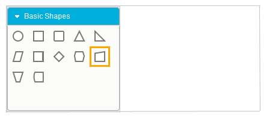
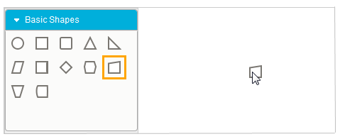
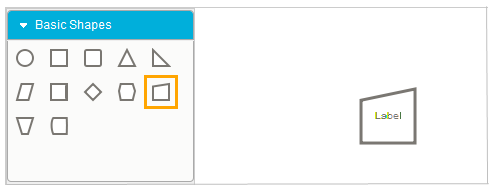

The steps for adding a node to the diagram using the symbol palette are:
1. Click the desired node on the symbol palette.

Figure 35: Item Selected
2. When holding the left mouse button, drag the node to the drawing area.

Figure 36: Item Dragged
3. Now release the mouse button. The desired node is now on the drawing area at the point where the pointer was released.

Figure 37: Item Dropped